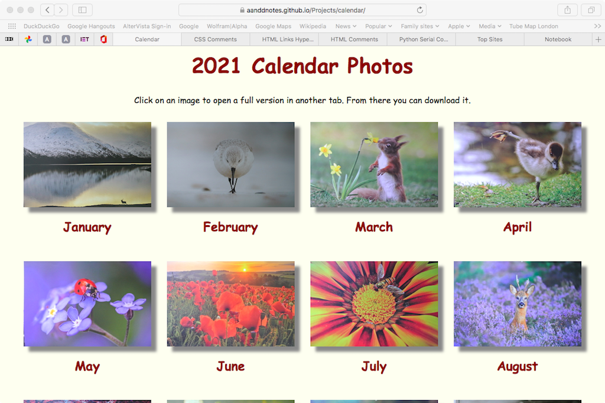

A Responsive Web Site
We use calendars quite a lot. Mine is on my phone and Grandma uses her WI calendar that hangs in the kitchen. On these calendars we write down things that we have to do. However, we usually have another calendar that hangs in the study. This is one that has a nice collection of photos, one for each month. For next year, 2021, we have bought a special charity calendar produced by a TV programme called Country File. We don't often watch it, since it is on quite early in the evening, when we are eating our dinner.
I thought that you might like to see the photos, so I've put them on a web site so that you can see them. Just go here. You can then click on the photo for a month and see a full-size version. If you want, you can then download it to use, for example, as your computer or tablet background.
You should also find that the arrangement of the months changes on the screen depending upon what device you are using to view it. On a desktop computer or laptop you will see four months in each row. On a tablet you might also see four months across, until you turn the tablet to portrait, when it might change to two months per row. On a phone it will then be just one month per row. This is the first time that I've created a web site that looks different on different devices. This is called a 'responsive' web page.